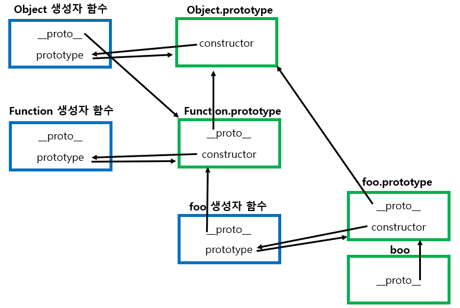

함수
다른 언어의 함수와 같이 어떠한 행동을 정의하는 부분이다.
다른점이라고 한다면 행동으로 취급하는 것이 아닌 이 행동또한 값으로 취급하여 함수를 복사도 가능하고 다른 변수에 할당도 가능하다.
엄밀히 말하면 호출이 가능한 행동 객체 이다.
정의 방법
◾ 선언식
function sayHello() {
console.log('hello');
}
sayHello(); //'hello'
let func = sayHello(); //변수에 할당 가능
fucn(); //'hello'
function키워드를 이용해 정의하며, JS는 자료형 타입을 명시하지 않기 때문에 반환이 존재하는 함수여도 자료형 타입을 명시안해주어도 된다.
◾ 표현식
let sayHello = fucntion(){
alert( "hello");
}
sayHello();
익명함수를 이용하여 바로 변수에 할당하는 방식
◾ 두 방법의 차이점
1. JS엔진이 함수를 생성하는 시기
함수 표현식은 함수가 실제로 실행될때 생성되고, 함수 선언문은 호이스팅에 의해 스크립트 실행전 생성되어 정의부분보다 일찍 호출할 수 있다.
여기서 생성된다는 것은 메모리에 할당된다는 의미이다.
호이스팅?
함수 실행전에 함수안에 필요한 변수들을 모두 찾아 최상단에 선언하는 것
2. 스코프
함수 선언식은 함수가 선언된 코드 블럭안에서만 유효하다.
//선언식
if (true) {
function welcome() {
alert('안녕!');
}
}
welcome(); // Error: welcome is not defined
//표현식
let welcome;
if(true){
welcome = fuction(){
alert("안녕!");
}
}
welcome(); //안녕!
◾ 호출 방식
호출 방식에 따라 this가 어떤 객체에 바인딩 되는지 달라진다.
1. 함수 호출
let boo = function () {
console.log(this);
};
boo();
함수, 내부 함수, 콜백 함수모두 기본적으로는 전역 객체에 this가 바인딩 된다.
2. 메소드 호출
var user = {
name : "hong",
sayHi: fucntion(){
console.log(this.name);
}
}
user.sayHi();
객체의 프로퍼티 값으로 들어있는 메서드에서의 this는 해당 메소드를 갖고있는 객체에 바인딩된다.
3. 생성자 함수 호출
function User(name) {
this.name = name;
}
let me = new User('hong');
JS의 생성자 함수는 일반 함수에 new키워드를 붙여 생성하면 생성자 함수가 된다.
new키워드를 통해 생성하면 함수 코드 실행전에 빈 객체를 만들어 이 객체에 this를 바인딩 시킨 후 코드를 동작시키고 결과 객체를 반환하게 된다. (암묵적으로 this반환)
new키워드 없이 생성자함수를 호출하면 일반 함수를 호출하는 것과 다를 바가 없어 전역객체에 this가 바인딩 되고 this를 반환하지도 않는다.
if (!(this instanceof arguments.callee)) {
return new arguments.callee(arg);
}
위와 같이 new없이 생성되는 것을 방지할 수 도 있다.
4. apply/call/bind 호출
func.apply(thisObj, [args]); // args라는 유사 배열객체를 매개변수로 func를 호출 해 thisObj 에 this를 바인딩한다.
func.call(thisObj, arg1, arg2, ...);
func.bind(thisObj);
함수를 통해 특정 객체에 this를 바인딩해 그 바인딩된 새로운 함수를 return하는 함수들이다.
콜백 함수
처음에 말한것과 같이 JS는 함수를 값으로 취급하기 때문에 함수의 매개변수로 함수도 대입이 가능한데, 이를 함수를 필요할때 다시 호출한다고 해서 콜백 함수라고 한다.
function ask(question, yes, no) {
if (confirm(question)) yes();
else no();
}
ask(
'동의하십니까?',
function () {
alert('동의하셨습니다.');
},
function () {
alert('취소 버튼을 누르셨습니다.');
}
);
화살표 함수
함수 표현식을 더 간결하게 생성이 가능한 방식이다.
let sum = (a) => a + 2;
java의 람다식과 비슷하게 인수가 하나면 괄호는 생략이 가능하고, 함수내용이 한줄이면 이도 생략이 가능하다.
◾ 특징
자신의 this가 없다.
this는 객체 자신을 가리키는 키워드로 화살표 함수는 this가 없어 외부에서 값을 찾는다.
이렇게 this는 상위 스코프를 가리키기 때문에 Lexical this라고 한다.
따라서 생성자 함수로 사용이 불가능하다. (인스턴스에 값을 할당해주지 못하기 때문에)
대신에 this를 항상 상위에서 찾기 때문에 콜백 함수, 내부 함수로 사용하기 좋다.
매개변수
함수에 정의함 매개변수보다 많이 넣어도 에러가 발생하지 않고 arguments라는 유사 배열 객체가 존재해 모든 인수에 접근 가능하다.
arguments가 없다.
자기 자신의 this가 없기 때문에 이도 상위 스코프의 arguments를 참조한다.
함수의 프로퍼티
JS는 함수도 객체취급 하기 때문에 내부에 숨김 프로퍼티를 갖고 있으며 추가/제거/참조를 할 수 있다.
◾ 이름 (name)
let func = function () {
return 'func';
};
console.log(func.name); //func
함수의 이름을 담고 있으며, 위와 같이 익명함수로 선언을 해도 상황에 맞게 자동으로 할당해주는 데 이를 contextual name이라고 한다.
◾ length
함수의 매개변수의 개수를 담고있는 프로퍼티
◾ __proto__ ( [[Prototype]])
자신의 프로토타입 (부모 객체)를 가르키는 프로퍼티로 크롬에서는 \_\_proto\_\_와 같이 사용하고 명세서에는 [[Prototype]]와 같이 정의되어 있다.
모든 객체가 갖고 있는 프로퍼티로 부모의 prototype 객체 정보를 가르킨다.
엄밀히 말하면 부모의 객체가 가지고 있는 getter/setter로 접근자 프로퍼티이다.
◾ prototype
함수만 갖고 있는 프로퍼티로 자식 prototype객체의 constructor가 이를 참조한다.
함수만 갖고 있기 때문에 new가 아닌 리터럴 방식으로 생성한 객체는 이를 갖고 있지 않는다.
function foo() {}
let boo = new foo();

Object.prototype이 체인의 최종 루트이며, 생성자 함수를 통해 객체 생성시 자동으로 생성자 함수의 prototype은 그 원형객체(prototype객체)를 가리키고 이를 수정하여 상속관계를 표현할 수도 있다.
◾ 커스텀 프로퍼티
해당 함수안에서 사라지지 않는 고유한 값을 사용하고 싶을때 전역변수를 이용할 수도 있지만, 해당 함수의 프로퍼티로 만들어주면 지저분하지 않게 이용이 가능하다.
function makeCounter() {
function counter() {
return counter.count++;
}
counter.count = 0;
return counter;
}
let counter = makeCounter();
counter(); // 0
counter(); // 1
다음과 같이 counter라는 함수에 내부 프로퍼티를 생성해서 사용할 수 있다.
기명 함수 표현식
익명함수에서 자기 자신을 호출하고 싶을때 사용할 수 있는 방법이다.
let sayHi = function func(name) {
if (name) console.log(`Hello ${name}`);
else func('Anonymous');
};